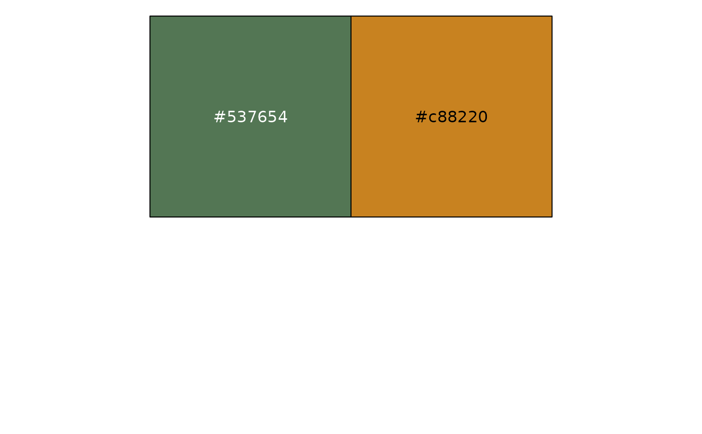

Palettes with two constrast colors
pal_two.RdPalette with two constrast colors, with the following palettes:
- barbie: Inspired by the movie Barbie.
- boba_fett: Inspired by the TV series Boba Fett.
- blade_runner_2049: Inspired by the movie Blade Runner 2049.
- dear_white_people: Inspired by the TV series Dear White People.
- emily_in_paris: Inspired by the TV series Emily in Paris.
- exmas: Inspired by the movie Exmas.
- family_switch: Inpired by the movie Family Switch.
- good_omens: Inspired by the TV series Good Omens.
- hightown: Inspired by the TV series Hightown.
- jaws: Inspired by the movie Jaws.
- nightflyers: Inspired by the TV series Nightflyers.
- mussum: Inspired by the movie Mussum.
- notorious: Inspired by the movie Notorious.
- saint_maud: Inspired by the movie Saint Maud.
- shirley: Inspired by the movie Shirley.
- spirited: Inspired by the movie Spirited.
- the_english: Inspired by the movie The English.
- the_expanse: Inspired by the TV series The Expanse.
- the_gilded_age: Inspired by the TV series The Gilded Age.
- the_help: Inspired by the movie The Help.
- the_whale: Inspired by the movie The Whale.
- titans: Inspired by the TV series Titans.
- watchmen: Inspired by the TV series Watchmen.
- winning_time: Inspired by the TV series Winning Time.
Examples
scales::show_col(pal_two("boba_fett"))
